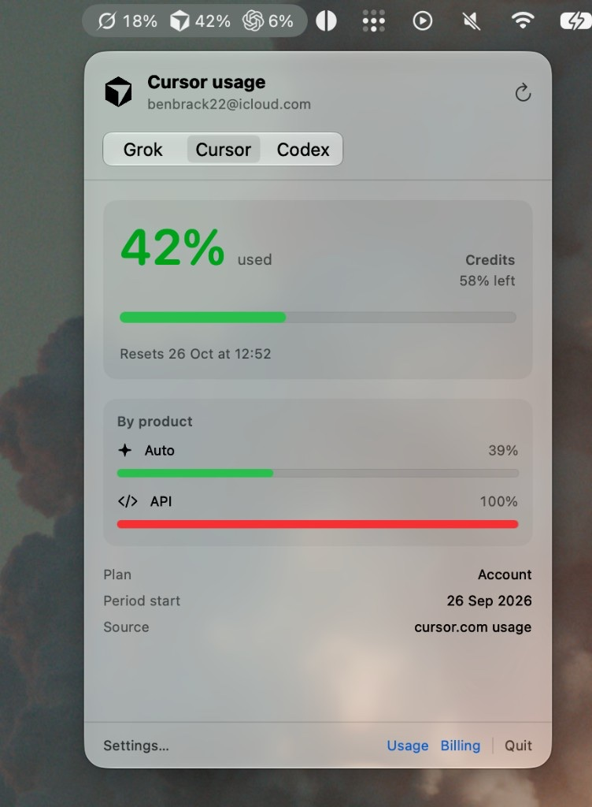

Same login you already have
Sign in once with grok login, Cursor, claude, or codex login. TokenPanel reads that session and hits the same usage endpoint the product uses.
macOS menu bar
TokenPanel shows Grok, Cursor, Claude Code, and Codex usage next to the clock. It reuses each product's local session. No extra API keys, no Dock icon.

Sign in once with grok login, Cursor, claude, or codex login. TokenPanel reads that session and hits the same usage endpoint the product uses.
Click for a per-product breakdown and reset time. Settings pick which percentage sits in the menu bar. Small through extra-large widgets live in the macOS gallery, and they read the last refresh from the app.
It does not track xAI, Anthropic, or OpenAI developer API prepaid balances. Claude Code only works with the claude.ai subscription login, not an API key.
Usage APIs are undocumented and can change. Product labels in the breakdown are best-effort. If numbers go empty, sign in again in that product, then refresh.
Homebrew is the usual path. Homebrew 6 will not load a third-party cask until you trust the tap once on that machine.
$ brew trust --cask benbrackenbury/tokenpanel/tokenpanel $ brew tap benbrackenbury/tokenpanel https://github.com/benbrackenbury/TokenPanel $ brew install --cask tokenpanel
Or grab the DMG from Releases and drag TokenPanel into Applications. The build is ad-hoc signed, not notarized. If Gatekeeper blocks it, right-click the app and choose Open.
Then sign in to the tools you care about (grok login, codex login, claude, or Cursor itself). Look for TokenPanel in the menu bar.